🎮 Steal An Egg
50 postări · cele mai noi primele · vezi în blog cu filtre

TREND SHORTS📅 22 octombrie 2026
🧊 „Freeze Tag Is DEADLY”: un joc banal povestit ca o lume mortală, ~424K în 3,5 ore
playit are un short Roblox, „Freeze Tag Is DEADLY...”, cu ~424K vizualizări în 3,5 ore și ~74K pe oră (citite pe 21 oct). • 💀 Formula: un…
Citește tot →
VEXU LIVE📅 22 octombrie 2026
Vexu își cere scuze?! 😳
Vexu are un Short pe canalul VEXU Online cu titlul „Vreau sa imi cer scuze pentru Roblox, Steal an egg” 😳 L-a publicat miercuri, 21…
Citește tot →

TREND SHORTS📅 22 octombrie 2026
🥚 Zidul secret de ouă vs „regele gorilă”: 1M în 14 ore
LAYZO Roblox are un short de 26 de secunde din Steal An Egg, „massive secret egg wall vs angry gorilla king”, cu ~1,08M vizualizări în 14…
Citește tot →

TREND SHORTS📅 22 octombrie 2026
😴 Noobified merge spre 3M cu „Nimeni n-are voie să doarmă 7 zile”
Noobified are un short nou, „Nobody is Allowed to SLEEP for 7 DAYS...”, de 157 de secunde, cu ~3,22M vizualizări și ~111K pe oră (citite…
Citește tot →
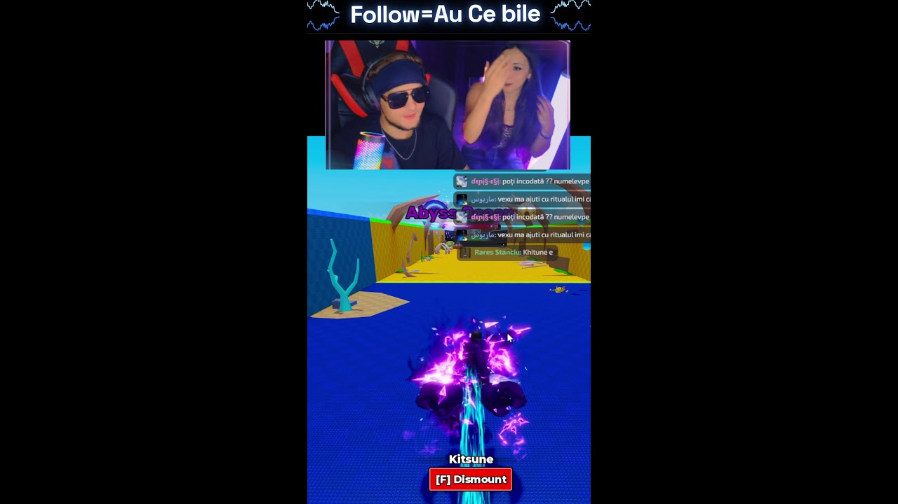
VEXU LIVE📅 22 octombrie 2026
⏪ Throwback: „Steal an egg cu vexu si ale” 🥚
Throwback cu Vexu & Ale! Revezi VOD-ul „Steal an egg cu vexu si ale”, de pe canalul VEXU Online:…
Citește tot →
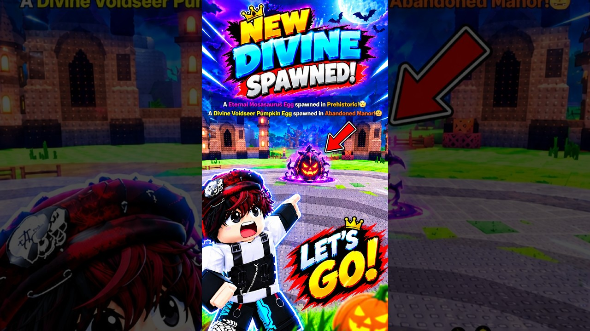
TREND SHORTS📅 22 octombrie 2026
🚂 Unde te duce Phantom Express? Ideea de short din trendul „NEW DIVINE SPAWNED!”
Mr Naveen Live are un short de 59 de secunde din Steal An Egg, „NEW DIVINE PUMPKIN EGG SPAWNED!”, cu ~50K vizualizări pe 18 oct și ~97K…
Citește tot →

TREND SHORTS📅 21 octombrie 2026
„I Moved The HIDDEN Halloween Portal”: skit-ul de 1,02M 🎃
Best Noob a postat short-ul „I Moved The HIDDEN Halloween Portal”, care are 1,02M vizualizări (citite pe 21 oct). ⚠️ CLAIM: portalul…
Citește tot →

TREND SHORTS📅 21 octombrie 2026
Pro vs noob: „When Pro Tries to Help Noob but Fails” trece de 3,35M 🥹
Vua roblox a postat short-ul „When Pro Tries to Help Noob but Fails🥹”, care are 3,35M vizualizări (citite pe 21 oct). E un skit IRL fără…
Citește tot →

TREND SHORTS📅 21 octombrie 2026
Votează cu like-ul: bătălie de pet-uri în 10 secunde în Steal An Egg 🗳️⚔️
subscribeG00 a postat un short din Steal An Egg care a strâns ~280K vizualizări (citite pe 18 oct). După copertă, formula e simplă: sus…
Citește tot →
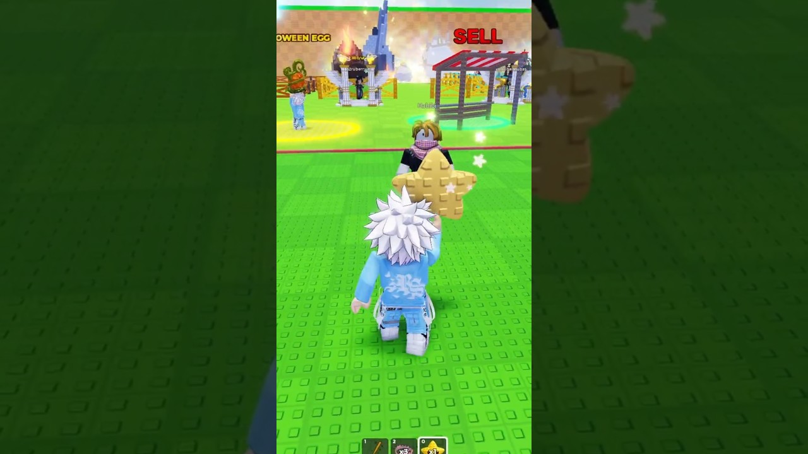
TREND SHORTS📅 21 octombrie 2026
Experiment pe pet-ul fantomă nou din Steal An Egg: formatul care urcă cel mai repede 👻⭐
Bantai Ninja a postat un short din Steal An Egg în care pune „Mount Star” pe pet-ul fantomă nou și a ajuns la ~27K vizualizări în…
Citește tot →

TREND SHORTS📅 21 octombrie 2026
Deschid ouă de Halloween până iese ceva 😱
PUNPKIN BLX are un short din Steal an Egg, „I OPENED the NEW HALLOWEEN EGGS in Steal an Egg!”, cu ~16K vizualizări (citite pe 18 oct). Din…
Citește tot →

VEXU LIVE📅 21 octombrie 2026
🥚 Ghicește ce iese din oul de 2.250
🎃 Halloween Dimension Egg din Steal An Egg se ia de la dovleacul uriaș și costă 2.250 Candy Corn (după ghiduri). • Andrei îl deschide pe…
Citește tot →

TREND SHORTS📅 21 octombrie 2026
👻 Vacuum-ul de fantome din Steal An Egg: bara 457/500
Zhongxing003 are un short cu ~10,9K vizualizări (citite pe 18 oct). Pe thumbnail se vede o rază verde care trage o fantomă mare, iar…
Citește tot →

TREND SHORTS📅 21 octombrie 2026
🌕 Blood Moon x2? Am cronometrat
TheRECKLESS are un ghid de 38 de secunde despre Candy Corn în Steal an Egg, cu „2X CANDY” scris mare pe thumbnail, peste o lună roșie. Din…
Citește tot →

VEXU LIVE📅 20 octombrie 2026
📰 Throwback: Știri din Roblox, Steal an egg
⏪ Throwback: Short-ul VEXU Online „Știri din Roblox, Steal an egg”, publicat pe 3 oct 2026, a strâns ~13K vizualizări (citit pe 20 oct).…
Citește tot →

TREND SHORTS📅 20 octombrie 2026
«Admin» care oprește timpul ca să spawneze ouăle în Steal An Egg
Chessa are un short de 31 de secunde, „we got admin in steal an egg ❤️”, care a strâns ~286K vizualizări și mergea cu ~16K pe oră (citire…
Citește tot →

TREND SHORTS📅 20 octombrie 2026
🎃 Oul Halloween Dimension: cercul roșu pe cel mai rar pet
Tuan Anh are un short de 47 de secunde care deschide direct pe fereastra oficială „HALLOWEEN DIMENSION EGG – Limited Time!” și a ajuns la…
Citește tot →

TREND SHORTS📅 20 octombrie 2026
🚂 Phantom Express și Spectral: reveal-ul care crește cel mai repede
Noob Bacon Real are un short de 56 de secunde cu Phantom Express care a ajuns la ~75K vizualizări (citite pe 18 oct) și creștea cu ~15–23K…
Citește tot →

TREND SHORTS📅 20 octombrie 2026
👻 Echo, câinele-fantomă: contorul 2/4 te ține până la final
Yeklii are ~88K vizualizări (citite pe 18 oct) cu un short de 35 de secunde despre Echo, câinele-fantomă din Steal An Egg. Pe ecran se…
Citește tot →

VEXU LIVE📅 20 octombrie 2026
🔥 Toate secretele din Steal An Egg într-un singur clip
În clipul lung ai 5 secrete din Steal An Egg, pas cu pas: • oul secret • portalul din copac • calea spre fuziune • portalul secret •…
Citește tot →

TREND SHORTS📅 20 octombrie 2026
🍬 Candy Corn în Steal An Egg: cât candy îți trebuie?
Talayn are ~18,8K vizualizări (citite pe 18 oct) cu un short de 22 de secunde despre Candy Corn în Steal An Egg. Clipul intră direct pe…
Citește tot →
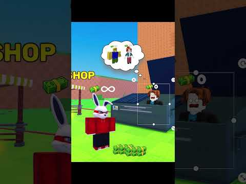
TREND SHORTS📅 19 octombrie 2026
🥚 Au vrut să-l păcălească pe admin… DAR
Robler are ~121K views (~33K pe oră) cu „POV They Wanted to Deceive the Admin, BUT.. | Steal an Egg”, un short de 28 de secunde. Nu are…
Citește tot →
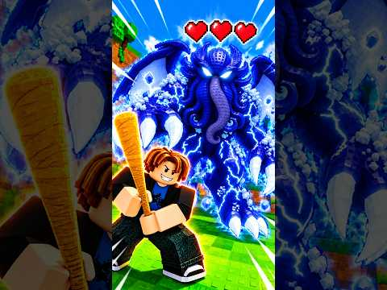
TREND SHORTS📅 19 octombrie 2026
🏆 Clasamentul care nu moare: cel mai puternic pet Divine
Veyar ENG are ~78K views cu „WHAT IS THE STRONGEST DIVINE PET IN STEAL AN EGG?!”. Formatul e simplu și merge: o întrebare de clasament…
Citește tot →

VEXU LIVE📅 19 octombrie 2026
🎃 VEXU & Ale în Dimensiunea de Halloween: tu alegi biomul
⚡ UPDATE 20 oct: Short-ul cu Vexu și Ale călărind a ajuns la ~2,7K vizualizări — dacă l-ai ratat:…
Citește tot →

VEXU LIVE📅 18 octombrie 2026
🎃 Diseară vânăm prin Halloween Dimension: chat-ul alege ZONA și NUMELE
Halloween Dimension e deschisă până sâmbătă, 24 octombrie, și are trei zone noi: Graveyard, Haunted Swamp și Abandoned Manor. • La…
Citește tot →

TREND SHORTS📅 18 octombrie 2026
Zoomy face din Steal An Egg un serial cu răsplată în titlu
Zoomy are ~121K views cu „ARCHANGEL has 3 HEADS and whoever helps him will be ADMIN!”, un short de 60 de secunde, iar continuarea „GUESS…
Citește tot →

TREND SHORTS📅 18 octombrie 2026
Mâini reale în Roblox: ‚THIS PRO TRIED TO STEAL MY EGG’
Games IRL are ~477K views și ~25K/h cu un short de 25 de secunde, în Steal An Egg. Formula: POV cu mâini reale peste joc, plus un plan…
Citește tot →

VEXU LIVE📅 18 octombrie 2026
Antrenament pentru ouăle secrete 🥚💀
🆕 UPDATE (20 oct): toate cele 5 secrete din Steal An Egg sunt acum într-un singur clip:…
Citește tot →

CONFIRMAT📅 18 octombrie 2026
🎃 Halloween Dimension e LIVE în Steal An Egg: 3 biomuri, Echo, Phantom Express + Part 2 pe 24 oct
⏳ UPDATE 22 oct: Ultimele 48 de ore! Halloween Dimension se închide sâmbătă, 24 oct, pe la 17:00 (ora României), deci mai ai cam două zile…
Citește tot →

VEXU LIVE📅 17 octombrie 2026
👻 Primul pas în portal, LIVE
Andrei vrea să intre în Halloween Dimension în direct, cu reacția lui pe bune. Vino să vezi cu el ce e dincolo. Follow pe TikTok…
Citește tot →

TREND SHORTS📅 17 octombrie 2026
Trollul care a rupt Steal an Egg peste noapte
Luzy Boy are ~881K în ~15h cu „This Kid Got TROLLED in Steal An Egg 😭”. E o capcană de 29s: oul blocat între blocuri, un „RUN!!” mare pe…
Citește tot →

CONFIRMAT📅 17 octombrie 2026
💙 DoBig lansează Do Big Do Good
Do Big Studios, studioul din spatele Steal An Egg, a lansat Do Big Do Good, o inițiativă caritabilă formată mai devreme anul acesta.
Citește tot →
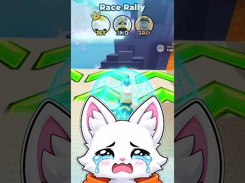
TREND SHORTS📅 17 octombrie 2026
‚Cheating In Steal an Egg’: gag scurt, views stabile
Clipul lui VoiceBlox are ~153K views și 41 de secunde. Formula: setup → momentul „interzis” → punchline. Ideea VEXU: un skit cu un cheat…
Citește tot →
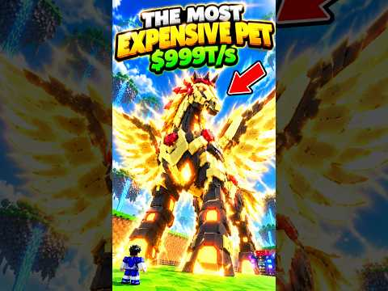
TREND SHORTS📅 17 octombrie 2026
Cel mai scump pet din Steal An Egg rupe acum Shorts-ul
Clipul lui xLORSI are ~315K views și crește cu ~47,5K pe oră. Formula: hook-ul cu valoarea în primele 2 secunde („cel mai scump pet”),…
Citește tot →
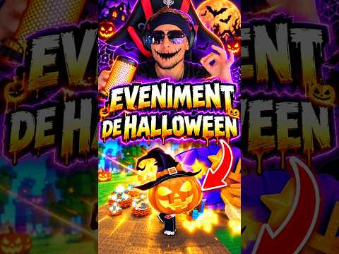
VEXU LIVE📅 16 octombrie 2026
🔥 Live-ul de diseară: încălzirea înainte de Halloween
Diseară, dacă intrăm live, facem încălzirea înainte de Halloween Dimension. Challenge-ul: chat-ul alege pe cine furăm, iar dacă nu…
Citește tot →
VEXU LIVE📅 16 octombrie 2026
🎃 AZI la 18:00 se deschide Halloween Dimension pe Steal An Egg!
UPDATE A început, vezi postarea nouă:…
Citește tot →

TREND SHORTS📅 16 octombrie 2026
POV: de la 0 la bogat în Steal An Egg
Robler, ~161,6K views (~44,5K/oră). Formula: contrast 0 bani vs 6B + twist la Fuse Machine. Pe TikTok: „steal an egg rags to riches”,…
Citește tot →

TREND SHORTS📅 16 octombrie 2026
Animația secretă de LIKE din Steal an Egg
BeeYT, ~150K views în mai puțin de o zi, Short ~31s („HE SHOWED ME NEW LIKE ANIMATION IN STEAL AN EGG..”). Formula: „un jucător mi-a…
Citește tot →
CONFIRMAT📅 15 octombrie 2026
🥚 Steal An Egg: actualizare azi la 16:10
Pe 15 octombrie, la 16:10 (ora României), Steal An Egg a primit o actualizare. Nu există note oficiale despre ce s-a schimbat — confirmată…
Citește tot →
VEXU LIVE📅 15 octombrie 2026
Doar ouă mari, o rundă întreagă: challenge-ul din seara asta 🥚
Chat-ul decide: o rundă întreagă de Steal An Egg în care am voie să iau DOAR ouă mari. După aia vine cursa pe mount, noob vs cel mai bun…
Citește tot →

TREND SHORTS📅 15 octombrie 2026
Steal An Egg „GAME VS REAL”: ~6.000 views pe oră în 25s 🥚😂
ImAleeBlox, ~39K views în ~6,5h (~6K/oră), 25s. Formula: comparație joc vs viață reală, punchline rapid, fără intro. Pe TikTok: „steal an…
Citește tot →
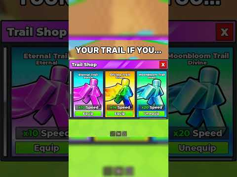
TREND SHORTS📅 15 octombrie 2026
„Your Trail If You…” pe Steal An Egg: ~2.000 views pe oră 🔥
Keron, ~33K views în ~17h (~2K/oră), 12s. Formula: template „your trail if you…”, acțiune din prima secundă, buclă. Pe TikTok: „steal an…
Citește tot →
VEXU LIVE📅 15 octombrie 2026
SAE acum ~1,44M jucători. Halloween Dimension sâmbătă 18:00 RO 🎃
Steal An Egg stă acum la ~1,44 milioane jucători simultan (~8,15 miliarde vizite). Halloween Dimension rămâne sâmbătă 17 oct ~18:00 RO →…
Citește tot →
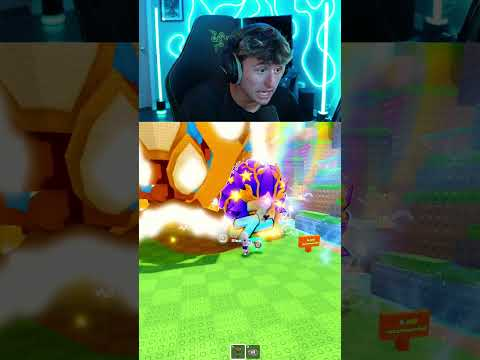
TREND SHORTS ZVON📅 15 octombrie 2026
Un „glitch” în Steal an Egg strânge ~8.300 views pe oră 🥚⚡
BeauBerryBiscuit, ~21,7K views în ~9,5h (~8,3K/oră), 64s. Formula: arată „secretul” direct, fără intro. Pe TikTok: „steal an egg glitch”.…
Citește tot →

VEXU LIVE📅 15 octombrie 2026
Mai sunt 2 zile până la Halloween Dimension 👻
Sâmbătă, 17 oct, la 18:00 RO, până sâmbătă, 24 oct. Portal, boși, monștri, ouă secrete, două părți, fără leak-uri. Shorts VEXU:…
Citește tot →
CONFIRMAT📅 14 octombrie 2026
🐎 Update-ul cu Mounts a ajuns în Steal An Egg
Din 10 oct îți călărești pet-urile; eventul de lansare a fost 10 oct 18:00 → 11 oct 22:00 RO, iar mount-urile au rămas în joc.
Citește tot →
VEXU LIVE📅 14 octombrie 2026
Portalul se deschide sâmbătă! Ce urmează pe live-urile VEXU 👻
Urmează câteva seri de live pe Steal An Egg. Sâmbătă, 17 octombrie, la 18:00 (ora României), se deschide Halloween Dimension, eventul…
Citește tot →
CONFIRMAT📅 14 octombrie 2026
🎃 Halloween Dimension vine în Steal An Egg!
Eventul pornește sâmbătă, 17 octombrie, la 18:00 (ora României) și ține până sâmbătă, 24 octombrie, la 17:00. Portal, boși, monștri, ouă…
Citește tot →
CONFIRMAT📅 14 octombrie 2026
🚫 Nu există coduri de Halloween
Atenție la țepe: Steal An Egg nu are sistem de redeem, deci nu există coduri de Halloween.
Citește tot →
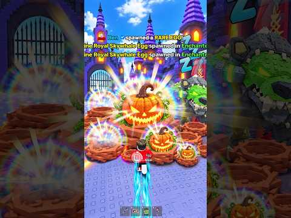
TREND SHORTS📅 14 octombrie 2026
Steal an Egg Halloween: valul a pornit
Golul s-a închis pe 14 octombrie, în jurul orei 18:00 (ora României): Short-urile Steal an Egg de Halloween au prins în sfârșit valul.…
Citește tot →
Follow = Au ce bile! 💥🎵 TikTok @vexu_online▶️ YouTube VEXU Online